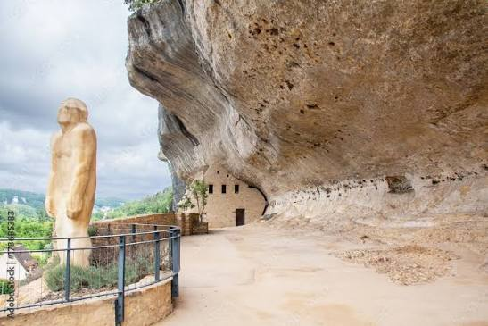
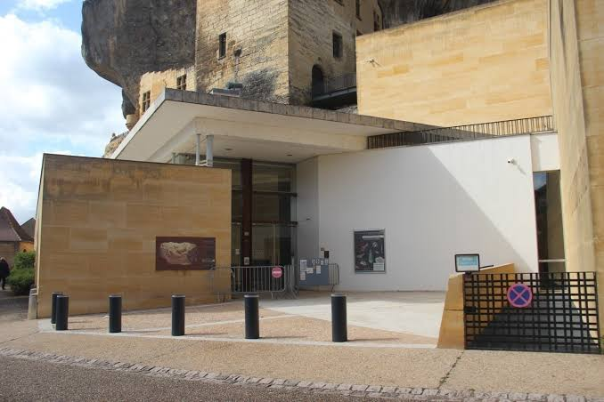

Les Eyzies
de Tayac


⟹ Patrimoine Mondial UNESCO ⟸
Blotti au confluent de la Vézère et de la Beune, au pied de falaises calcaires percées d'abris troglodytiques, le village des Eyzies-de-Tayac s'est imposé comme la « capitale mondiale de la Préhistoire ». Un titre qui n'a rien d'usurpé : c'est ici, en 1868, que le géologue Louis Lartet met au jour les premiers squelettes de l'Homme de Cro-Magnon, dans l'abri qui porte aujourd'hui son nom.

Cette découverte majeure marque la naissance de la Préhistoire comme discipline scientifique à part entière. Dès la fin du XIXᵉ siècle, les plus grands chercheurs de l'époque, Peyrony, Capitan, l'abbé Breuil, convergent vers la vallée de la Vézère, multipliant fouilles et découvertes sur un territoire particulièrement dense en gisements et abris sous roche.
En 1979, l'inscription des « Grottes ornées de la vallée de la Vézère » au patrimoine mondial de l'UNESCO reconnaît formellement cette concentration exceptionnelle. Sur les quinze sites classés de la vallée, neuf se trouvent directement sur le territoire de la commune : l'abri de Cro-Magnon, l'abri du Poisson, Font-de-Gaume, la Micoque, la Mouthe, Laugerie Basse, Laugerie Haute, le Grand Roc et les Combarelles.
Le cœur du village lui-même s'est développé sur un gisement préhistorique et un ancien village troglodytique. L'ancien château, bâti à même la falaise, abrite depuis 1918 le Musée national de Préhistoire, référence internationale pour l'étude du Paléolithique, qui retrace plus de 400 000 ans de présence humaine à travers plus de 18 000 objets.
Au-delà de la Préhistoire, la commune conserve également des traces médiévales notables, comme l'église fortifiée de Tayac, du XIIᵉ siècle, témoignant de la profondeur historique de ce territoire bien au-delà des seules origines de l'humanité.

Sur les pas de Cro-Magnon : un parcours pédestre balisé relie plusieurs abris du village, accessible librement en dehors des horaires de visite guidée des sites payants.
Visite en famille : le Pôle International de la Préhistoire et plusieurs sites proposent des ateliers pédagogiques et des animations adaptées aux enfants, autour de la taille du silex ou de l'art pariétal.
Randonnée dans la vallée : le village constitue un excellent point de départ pour rayonner à pied ou à vélo vers les autres sites de la vallée de la Vézère, entre Montignac et Sarlat.
Les Eyzies constituent une base idéale pour explorer l'ensemble de la vallée de la Vézère et ses environs.
Le village des Eyzies propose de nombreux restaurants, gîtes et chambres d'hôtes installés dans un cadre pittoresque au pied des falaises.
Montignac-Lascaux à une trentaine de minutes, point de départ pour la visite du fac-similé de Lascaux IV.
Le Bugue village voisin sur la Vézère, réputé pour son marché et son aquarium du Périgord noir.
Sarlat-la-Canéda capitale du Périgord noir, à une vingtaine de kilomètres, pour prolonger la découverte par son centre historique médiéval.